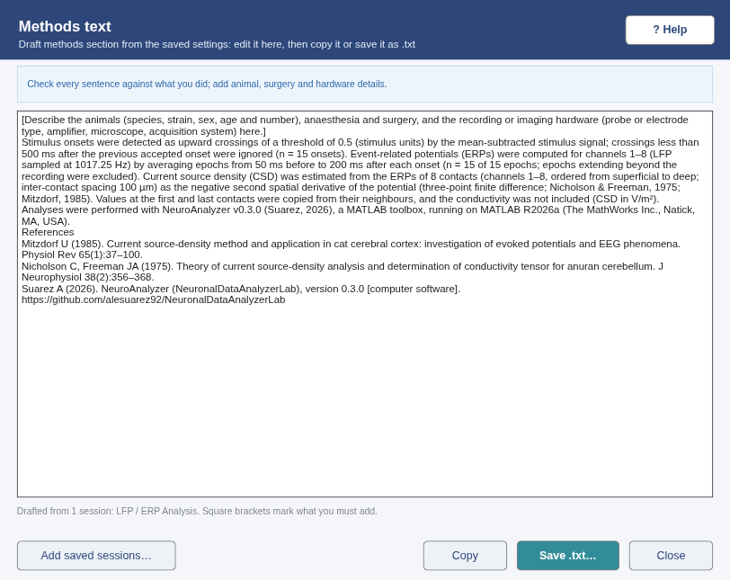

All windows
Sessions and reports
Save everything needed to repeat an analysis, reopen it later, and write a one-page PDF report for the lab notebook.
How to use it
- Save session… (last step card of every analysis window): choose a file name, type optional notes (animal, condition, why these settings) and click Save session. The
.nasession.matfile stores the input file paths with their size, date and MD5 checksum, every setting, the results and your notes. - Open session…: choose a
.nasession.matsaved by the same window. The input files are reloaded and checked; the settings are applied and the analysis is re-run, so the window looks as it did when you saved. - If an input file has moved, put it next to the session file (it is found automatically) or choose it when asked. If a file has changed since the session was saved, the session still opens and the status bar warns you.
- Report (PDF)…: writes one A4 page with a picture of the window and, below it, the NeuroAnalyzer and MATLAB versions, the date, every input file with its MD5, the settings and the key results. Attach it to your lab notebook or use it for the methods section.
Methods text
Methods text…, next to the session buttons of every analysis window, drafts a methods section from the analysis. It describes every step in the past tense with the values actually used (filters, trial and epoch windows, thresholds, CSD method, spike-sorting settings, statistical tests and corrections), names the NeuroAnalyzer and MATLAB versions, and lists the references. What the app cannot know (animals, surgery, hardware) is left as a bracketed placeholder; nothing is invented. Edit the text in the window, then Copy it or Save .txt…. Add saved sessions… combines several sessions of a pipeline in pipeline order.
{kind=link}

DEMO DATA — synthetic, generated by core/DemoData.mWalkthrough
What is stored and checked
What is stored
- Inputs: the full path, size in bytes, modification date and MD5 checksum of every input file (for folders such as TDT tanks: one checksum over all files in the folder).
- Settings: every parameter of the window (filters, ERP window and threshold, CSD order, time–frequency settings, spike-sorting settings, ROIs and line, features, statistical design, …).
- Results: the result structs of the window. Large signals (e.g. filtered LFP / MUA, cropped LDF) are not stored: they are re-computed from the checked input when the session is opened. Arrays larger than 100 MB are replaced by a note.
Opening a session
- The input files are checked first. ok: unchanged; moved: found next to the session file with the same checksum; changed: the checksum differs (the session opens with a warning, results may differ); missing: you are asked to locate it (the session does not open without it).
- The analysis is re-run with the saved settings. MUA Analysis is the exception: the sorted clusters, your merges and splits and the Undo history are restored as saved, because K-means and manual edits cannot be repeated exactly.
- A session saved by one window cannot be opened in another window.
The PDF report
- One page: base MATLAB cannot join several PDF pages without a toolbox, so the window picture and the summary share one A4 page. Long lists are shortened on the page; the session file keeps everything.
- The window picture is taken with
exportapp(MATLAB R2020b or later); if that fails, the largest plot is used instead.
Files
In
- A
.nasession.matfile saved by the same window (Open session) - The input files the session refers to, at their saved location, next to the session file, or chosen when asked
Out
<name>.nasession.mat: variablesessionwithapp,toolboxVersion,matlabVersion,os,created(ISO 8601),inputs(role, path, name, bytes, modified, md5),settings,results,summary,notes<name>_report.pdf: one A4 page (window image + versions, inputs with MD5, settings, key results)
Try it
- Try: in any window click Try demo data, run the analysis, then Save session…. Close the window, open it again from the launcher and click Open session…: the same plots and numbers come back.
- What you should get: the status bar says "Session … opened (saved … with NeuroAnalyzer v…)" and shows your notes. Report (PDF)… writes a one-page PDF (a few hundred kB).
Troubleshooting: Sessions and reports in the guide.